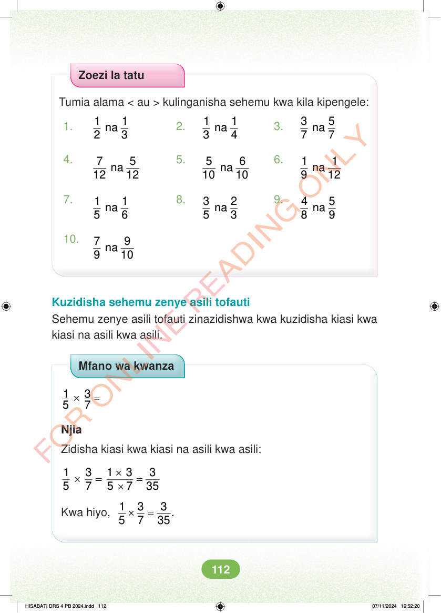

Zoezi la tatu Tumia alama < au > kulinganisha sehemu kwa kila kipengele: 1. 1 1 na 2 3 2. 1 1 na 3 4 3. 3 5 na 7 7 4. 7 5 na 12 12 5. 5 6 na 10 10 6. 1 1 na 9 12 7. 1 1 na 5 6 8. 3 2 na 5 3 9. 4 5 na 8 9 10. 7 9 na 9 10 Kuzidisha sehemu zenye asili tofauti Sehemu zenye asili tofauti zinazidishwa kwa kuzidisha kiasi kwa kiasi na asili kwa asili. Mfano wa kwanza = × 1 3 5 7 Njia Zidisha kiasi kwa kiasi na asili kwa asili: × × = = × 1 3 1 3 3 5 7 5 7 35 Kwa hiyo, × = 1 3 3 . 5 7 35 HISABATI DRS 4 PB 2024.indd 112 HISABATI DRS 4 PB 2024.indd 112 07/11/2024 16:52:20 07/11/2024 16:52:20